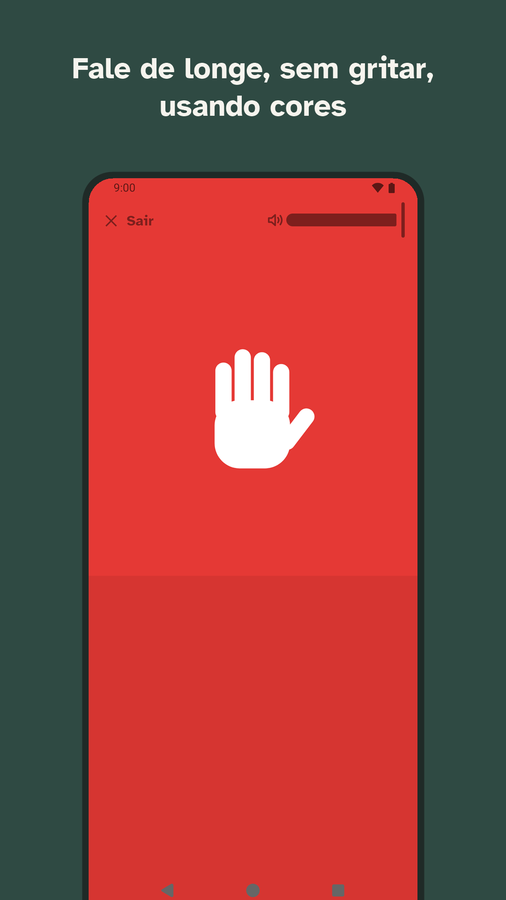
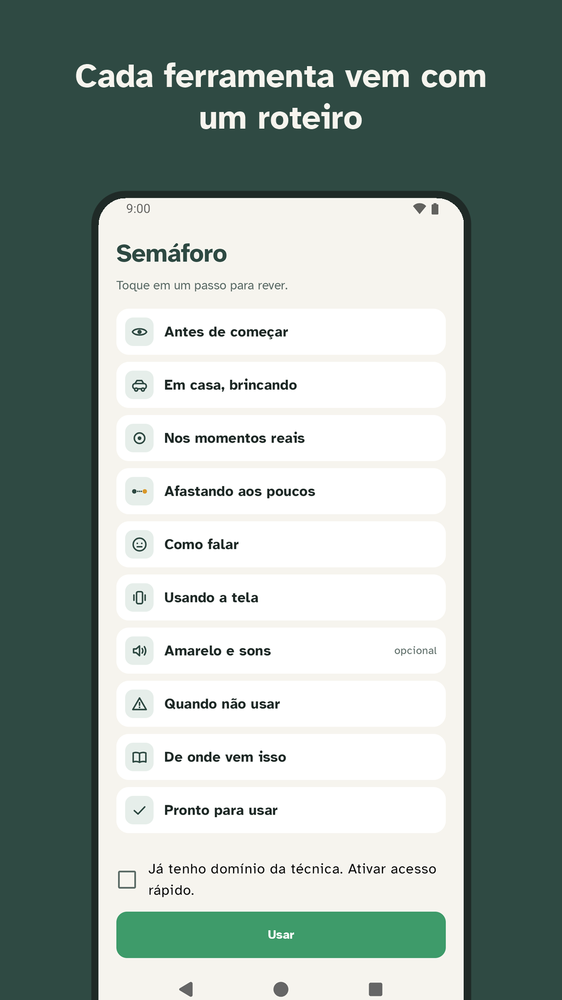
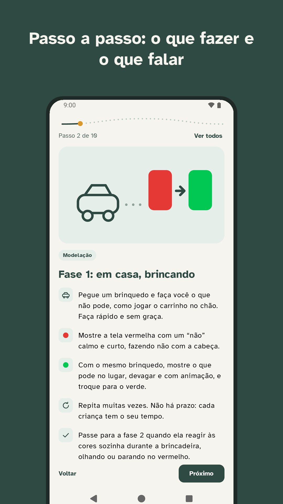
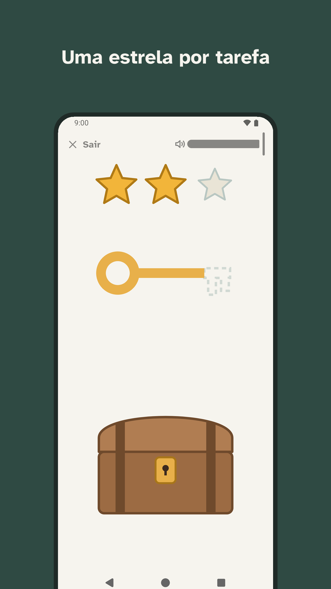
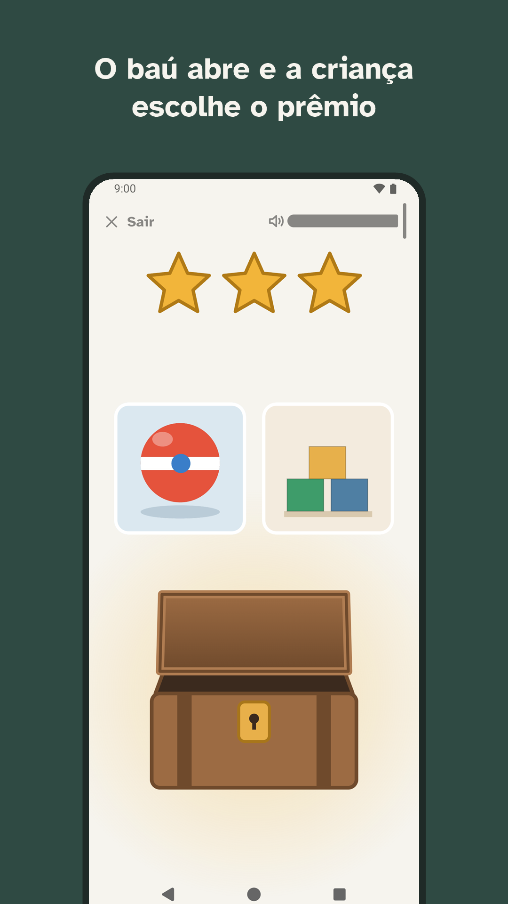
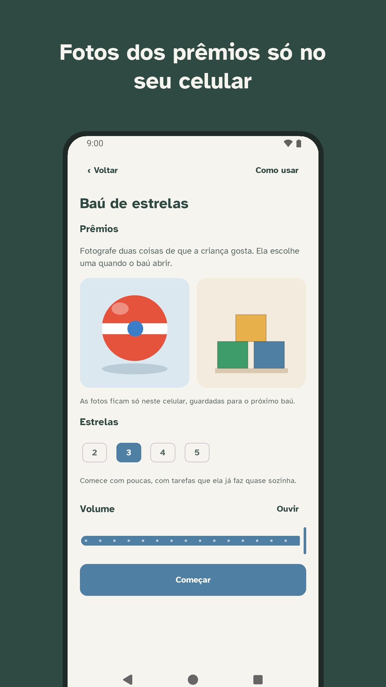

O Senda reúne ferramentas simples para pais de crianças autistas usarem no dia a dia. Cada ferramenta vem com um roteiro que ensina, passo a passo, como e quando usar: o método vem antes da ferramenta.
Em breve no Google Play






Semáforo
Um jeito de falar com a criança de longe, sem gritar, usando cores. O vermelho mostra o que não pode, e o verde mostra o que pode no lugar. A tela inteira vira a cor, com um desenho e um som, para a criança entender mesmo à distância.
- Roteiro em fases: primeiro perto, brincando; depois perto, nos momentos reais; e, aos poucos, de longe.
- Amarelo opcional, para "cuidado, você pode se machucar", ensinado depois que vermelho e verde estiverem firmes.
- Sons à escolha e volume ajustável na própria tela.
- Atalho na tela inicial do celular para abrir a cor na hora.
Baú de estrelas
Mostra para a criança o caminho até algo que ela quer: uma tarefa de cada vez, uma estrela por tarefa. Quando todas as estrelas se acendem, a chave fica pronta, o baú abre e ela escolhe o prêmio.
- De 2 a 5 estrelas, para começar com poucas.
- Fotos dos prêmios tiradas por você, com coisas de que a criança gosta de verdade.
- A estrela conquistada nunca é tirada: o baú fala do que ela fez, não do que errou.
Feito para os pais
- Visual calmo, sem excesso de estímulos.
- Letra pensada para leitura fácil.
- Roteiros curtos, em português, com a base de cada prática explicada.
- As ferramentas seguem práticas com evidência para o autismo, como apoio visual e reforçamento. As referências estão na tela "Sobre" do app.
Privacidade
O Senda não coleta nenhum dado. Não tem cadastro, anúncios nem acesso à internet. As fotos e as escolhas ficam só no seu celular. Leia a política de privacidade.
Importante: o Senda é um apoio educacional. Não é tratamento e não substitui terapia nem orientação profissional. Converse com a equipe que acompanha seu filho sobre como usar as ferramentas.
Contato
Sugestões, dúvidas ou algum problema? Escreva para pragmatic.headway.app@gmail.com.